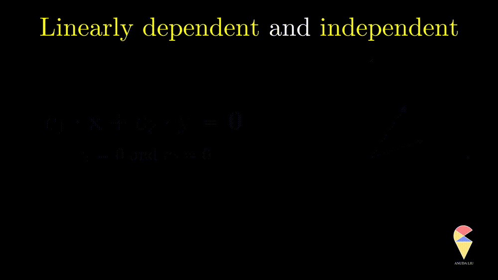
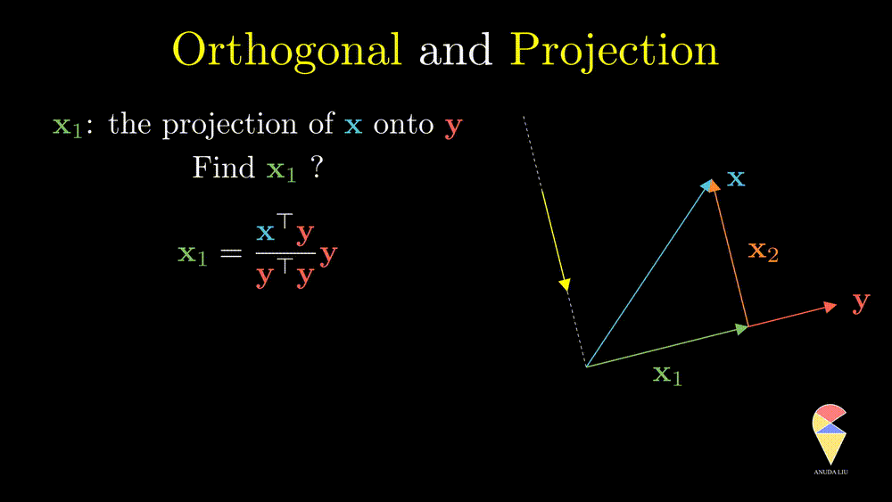

Linear Algebra for Data Science
Linear algebra is a basic tool in many disciplines, and multivariate statistical analysis is inseparable from it. If you asked me to give this course another name, I think it would be “Applied Linear Algebra”. In this section, I will provide you with a comprehensive review combining some statistical ideas. In addition, I believe the best way of learning linear algebra is through geometry, so many animations are applied to visualize the geometry. I hope it can help you recall everything and even have a deeper understanding of linear algebra.
Before we start, I have one question for you. Who is the protagonist of linear algebra? You may think it is the Matrix since usually we start from many complicated calculations on matrices in most linear algebra courses. However, I don’t think so and believe the leading man in linear algebra is Vector!
1. Vector Part
1.1 Vector
Array View:
What is a vector? First, a vector is an array of numbers. For example,
\[ \textbf{x} = \left( 38, 1, 170, 67, 2, 0 \right). \]
Conventionally, we use a lowercase letter in bold to denote a vector. There are two ways to arrange these numbers, horizontally or vertically. If we stack the numbers vertically, then I get a column vector, like this
\[ \textbf{x} = \begin{pmatrix} 38\\ 1\\ 170\\ 67\\ 2\\ 0 \end{pmatrix} \] Conventionally, again, it defaults to a column vector when we say a vector. However, a column vector takes much space, therefore people place it flat as a row vector and add a little “T” in the upper right corner.
\[ \textbf{x} = \left( 38, 1, 170, 67, 2, 0 \right)^{\top}. \]
The little “T” denotes an operation, transpose, which means changing the size of the array from (1,7) to (7,1). Thus vector is still a column vector.
In data science, there usually are two ways to understand a vector. First, it can be viewed as a single case with observations on several variables. We call this vector as an observation, or a case, or an example. For example, the vector above presents a 38 year old guy’s (1 indicates male) basic information. Hight is 170, weight is 67, he has two kids, and the number of pub visits per month is 0. He is probably a home guy.
Another example is displayed in the following 3D scatter plot. You can move your cursor to a certain point, and you’ll find a string of numbers. Each string of numbers represents a flower, and all the flowers are blooming in this 3D world, which we usually call the feature space.
Second, it also can be understood as a sample of a single variable. For example, \[ (1.78, 1.85, 1.74, 1.82, 1.90, 1.88)^{\top} \] it is a sample of height of audlt Swedish men.
Geometry View
Another understanding is to understand a vector from a geometric point of view as a directed line segment starting from the origin in the coordinate space and ending at the point of this string of numbers in the space. Here is an example of a vector in a 2D space.
This way of understanding allows us to learn linear algebra intuitively from a geometric point of view. For example, we can quantify a vector from two geometric perspectives, i.e. magnitude and direction. The magnitude of a vector can be quantified by the length of the corresponding arrow and we call it as norm. For a general vector \(\textbf{x} = \left( x_1, x_2, \dots, x_n \right)^{\top}\), its norm is \(\|\textbf{x}\|=\sqrt{ \sum_{i=1}^n x^2_i }\).
Direction is another important characteristic of a vector. The angle between the vector and x-axes can determine it. How can the angle be quantified? We will return to it when discussing an important operator in linear algebra, the inner product.
Let’s go ahead and study more from a geometric point of view.
1.2 Basic Operators
In a space of vectors, we need to define some operations for studying the relations among vectors. In this section, we focus on two basic operations, i.e. scalar multiplication and addition, and their geometric meanings.
Scalar multiplication
For a vector \(\textbf{x} = \left( x_1, x_2, \dots, x_n\right)^{\top}\) and a scalar \(k\), \(k\cdot \textbf{x} = \left( kx_1, kx_2, \dots, kx_n\right)^{\top}\). In data science, scalar multiplication is very common, the simplest example would be we want to change the units of a variable. In the Swedish men’s height example, the units is M, if we want to change it to CM, then we actually calcluate
\[ 100\times(1.78, 1.85, 1.74, 1.82, 1.90, 1.88)^{\top} \] Scalar multiplication often appears in the form of weights as well. We will see more examples in the linear combination.
This operation can only change the magnitude (norm) of the vector, and you can verify the following equation \[ \|k\textbf{x}\| = k\|\textbf{x}\| \] From the geometric point of view, after doing this operation, the vector will be stretched.
Also, \(k\textbf{x}\) represents a line in the direction of and crossing the original point.
Given a vector \(\textbf{x}\) there is a special scalar multiplication if set \(k = \|\textbf{x}\|^{-1}\) since the length of the scaled vector is \(1\) and it is called the unit vector.
Addition
So far we have only considered single vectors and will consider the first operation on two vectors, addition. For vectors \(\textbf{x} = \left( x_1, x_2, \dots, x_n\right)^{\top}\) and \(\textbf{y} = \left( y_1, y_2, \dots, y_n\right)^{\top}\), \(\textbf{x} + \textbf{y} = \left( x_1 + y_1, x_2+y_2, \dots, x_n + y_n\right)^{\top}\)
From a geometric point of view, addition follows the so-called ‘parallelogram rule’:
- Two vectors complete a parallelogram, then the sum of the two vectors is the directed diagonal of the parallelogram.
The difference between two vectors can be viewed as the first vector adding the second vector which is rescaled by \(-1\)
The last example essentially shows that the two vectors create the resulting purple vector through the two basic operations. ‘Create’ is the key word here, introducing the next concept, linear combination.
1.3 Linear Combination
Inspired by subtraction, it is obvious that if one changes the coefficients, then we will end up with another vector.
Inversely, we also can find two proper coefficients such that an arbitrary vector (purple) can be represented as the sum of two given vectors (red and blue).
So, the linear combination of two vectors is \(c_1\textbf{x}_1 + c_2\textbf{x}_2.\) In general, the linear combination can be defined as the weighted sum of a group of vectors. For \(\textbf{x}_1, \textbf{x}_2, \dots, \textbf{x}_n\), and n scalars \(c_1, c_2, \dots, c_n\), the linear combination is presented as \(\sum_{i=1}^n c_i\textbf{x}_i\).
It seems that we can create all the vectors as long as hold two vectors in a 2D space. However, that is not always true.
1.4 Linearly Independent
Next, I will show you one simple counter-example. Considering two vectors pointing in the same direction, we know that one vector can be represented as another vector scaled by some scalar. Therefore, the linear combination of the two vectors is equivalent to a scalar multiplication of arbitrary one vector. In this case, the resulting vector only stays in one direction or presents a line but not the 2D plane. Thus, we can’t create arbitrary vectors by the two vectors through linear combinations. It is also the case when the two vectors point in opposite directions.

In simple words, for two overlapping vectors, we can only create a new vector in the direction of two vectors. In a mathematical language, we can use a linear combination of two vectors with non-zero coefficients to get the zero vector. In this case, we say the two vectors are linearly dependent.
Oppositely, for two non-overlapping vectors, we can’t use a linear combination of them to create the zero vector unless the coefficients all are zeros, and we say the two vectors are linearly independent.
This definition can be extended to a more general scenario and leads to the general definition of linear dependence.

- For 2D space, we can maximumly have two linearly independent vectors. For k-D space, we can maximumly have k linearly independent vectors. Is that true?
Great! It is a good time to introduce the next concept, basis, which is not only important in linear algebra but also in data analysis.
1.5 Basis
Before, we emphasized a keyword, ‘create’, and say an arbitrary vector can be created by two non-overlapping vectors in 2D space. Now, I want to replace this keyword with ‘represented’, maybe a more formal one. With this new keyword, we move our attention from “resulting vector” to “the two original linearly independent vectors”. We call them a set of basis in the sense that they are the backbone of the space constituted by all possible vectors.

Let’s summarize. In a 2D space, a pair of non-overlapped vectors can be a basis. So the angle between the two vectors is very essential. Then how do we deal with angles in linear algebra? Another question is can we find a better basis in the sense that the coefficients of linear combination can be easily obtained? These questions lead to the next important operation, the inner product.
1.6 Inner Product
So far, we have defined one operation on two vectors, i.e. addition, and can see the power of geometry. In order to use more intuitive geometric ideas, we need to introduce another operation on two vectors, that is the inner product.
Inner product, at first sight
The inner product is also well known as the dot product. Here we use the inner product notations. For two vectors \(\textbf{x} = \left( x_1, x_2, \dots, x_n\right)^{\top}\) and \(\textbf{y} = \left( y_1, y_2, \dots, y_n\right)^{\top},\) the inner product is \(\langle \textbf{x}, \textbf{y} \rangle = \textbf{x}^{\top}\textbf{y} = \sum_{i=1}^n x_iy_i\). In textbooks in certain disciplines, the inner product is also represented as \(\textbf{x} \cdot \textbf{y}\).
Remark 1: Since the inner product of two vectors is a scalar, the result doesn’t depend on the order of two vectors.
Remark 2: A special case is the inner product of a vector and itself. We actually have seen it before and it is the square of norm of this vector.
Inner product, the geometric view
In a 2D space, two non-overlapping vectors can form a triangle. Based on the cosine theorem, one can show that the inner product of two vectors is equal to the cosine value of the angle between two vectors times the product of the length of two vectors, i.e.
\[ \langle \textbf{x}, \textbf{y} \rangle = \textbf{x}^{\top}\textbf{y} = cos(\theta)\cdot ||\textbf{x} ||||\textbf{y}|| \]
If the two vectors all are unit vectors, then the inner product is equal to the cosine value of the angle between the two vectors. In one word, the inner product of two vectors is proportional to the cosine value of the angle between two vectors, i.e. \(\langle \textbf{x}, \textbf{y} \rangle = \textbf{x}^{\top}\textbf{y} \propto cos(\theta).\) Now, the connection between geometry and algebra has been established.

Based on this geometrical idea, one may have realized that the inner product quantifies the similarity of two vectors since the angle indicates if the two vectors are close to each other. This idea is very important in data science and it has been applied in a proptotpye algorithm in machine learning, that is the well-known algorithm, perceptron algorithm. In statistics, one famous statistic is just based on the inner product. Do you know what is that?
We have seen that there is a strong connection between inner product and the angle between two vectors. In our real life and mathematics, an angle of 90 degrees is special and the most useful one and it leads to the next concept, orthogonal.
1.7 Orthogonal and Projection
Orthogonal
In linear algebra, if the angle between two vectors is 90 degrees, then we say they are orthogonal.
Recall your knowledge in high school, the cosine value of 90 degrees is 0. This fact provides a simple method to determine whether two vectors are orthogonal, i.e. two vectors are orthogonal if and only if their inner product is zero.
Orthogonal is an important concept in many ways. In statistics, there is a simple and good example. From the previous section, we learned that the correlation between two variables is just the cosine value of the angle between two variables. So if two variables are orthogonal, then they are also uncorrelated. Another reason is that the concept of orthogonal leads to the next important concept, projection.
Projection
A projection can be viewed as a vector created by two vectors through the following procedure. Suppose we have two non-overlapping vectors \(\textbf{x}\) and \(\textbf{y}\), a beam of light is incident from a direction perpendicular to \(\textbf{y}\) cause a shadow of \(\textbf{x}\) on \(\textbf{y}\) and the shadow is called the projection of \(\textbf{x}\) onto \(\textbf{y}\).
One interesting problem is how to represent the shadow \(\textbf{x}_1\) by the two existing vectors. You may have realized that \(\textbf{x}_1\) overlaps with vector \(\textbf{y}\), therefore \(\textbf{x}_1\) should be scaled \(\textbf{y}\), i.e. \(\textbf{x}_1 = k \cdot \textbf{y}\). So the problem becomes finding the coefficient \(k\). Based on the orthogonal properties, we can find that
\[ k = \frac{\textbf{x}^{\top} \textbf{y}}{\textbf{y}^{\top} \textbf{y}} \text{, and } \textbf{x}_1 = \frac{\textbf{x}^{\top} \textbf{y}}{\textbf{y}^{\top} \textbf{y}} \textbf{y}. \] through the following derivations.
Remark: The scalar \(k\) is just the length of projection and it is called scalar projection. One can go further and find that the scalar projection is obtained by the inner product of \(\textbf{x}\) and the unit vector in \(\textbf{y}\) direction.

Orthonormal Basis
In 2D space, there is a pair of two special and nice unit vectors, \((1,0)^{\top}\) and \((0,1)^{\top}\). One can easily get the scalar projection of arbitrary vectors on them, isn’t it? Obviously, they also form a basis of 2D space. This basis is very nice since they are not only unit vectors but also orthogonal to each other. We call this kind of basis an orthonormal basis.
1.8 Review and Outlook
Let’s review linear combinations in 2D space from a view of the inner product.
\[ \textbf{y} = x_1 \cdot \textbf{a}_1 + x_2 \cdot \textbf{a}_2 \]
The vector \(\textbf{y}\) is represented as the linear combination of the two basis vectors \(\textbf{a}_1, \textbf{a}_2\). It can be reviewed as the inner product of two “vectors”, one is the vector of coefficients, \((x_1, x_2)^{\top}\), that we are familiar with, and another is a vector of two vectors, \((\textbf{a}_1, \textbf{a}_2)^{\top}\). Based on this thinking, we can rewrite it as
\[ \textbf{y} = (\textbf{a}_1, \textbf{a}_2) \begin{pmatrix} x_1\\ x_2 \end{pmatrix} \]
Let’s focus on \((\textbf{a}_1, \textbf{a}_2)\). It is a 2 by 2 rectangle array and we denote it by a bold capital letter, \(\textbf{A}\), and name it matrix!
2. Matrix Part
2.1 Matrix, its true colors
Matrix, at first sight
The most straightforward definition of a matrix is the rectangle array. One needs to use two numbers to describe the size (shape) of a matrix, the numbers of rows and columns. In the following example, the matrix consists of 3 rows and 4 columns. We say it is a 3 by 4 matrix. One neat but informative notation is \(\textbf{A} = \left\{ a_{ij} \right\}_{3 \times 4}\). In this course, keep in mind, we always use \(i\) indicates for the row index and \(j\) for column index.
You may remember the idea in the previous section that a matrix can be viewed as a “row vector” of column vectors. In this example, suppose we can find 3 linearly independent vectors from the 4 column vectors, then they can be viewed as a basis and generate a space. Similarly, the matrix also can be viewed as a “column vector” of row vectors, and they also can generate a space if they are linearly independent. In statistics, especially MDA, we mainly work with a data matrix. Let’s talk about it later on.
Matrix, true colors
The definition of the matrix above is very straightforward and very helpful when we understand a data matrix in MDA. However, the disadvantage of this definition is that it is too dry, and we cannot understand it from a functional point of view as well as a geometric point of view. Let’s take a look at what its true color. Let’s turn back to the concept of ‘linear combination’ and watch the following animation.
From this animation, we can see that the \(n \times p\) matrix \(\textbf{A}\) determines a map (function) from the \(\mathbb{R}^p\) space to the \(\mathbb{R}^n\) space. We call this map or function a linear transformation. In some sense, the matrix can be viewed as a bridge between two spaces.
Remark: we also want to emphasize that the meaning of an action that pre-multiply a vector by a matrix, \(\textbf{Ax}\), even though we have not defined matrix multiplication yet. Keep in mind that this action means that one uses the elements of \(\textbf{x}\) as coefficients to calculate the linear combination of column vectors of the matrix \(\textbf{A}\). It is very helpful when we discuss the next important concept, the rank of a matrix.
2.2 Rank
Let’s have a look at some examples.

In this example, we transform a 2D vector \(\textbf{x}\) to a 3D space through the matrix \(\textbf{A}\). However, is the new space “richer” than the original one? It seems not since the degree of freedom of taking values in the resulting vector is 2, and not different from the input vector \(\textbf{x}\). What does that mean? Let’s understand it from the geometric point of view.
From the animation, we can see that if one puts all the vectors in the original space (blue) into the conveyor belt, matrix \(\textbf{A}\), then the output vectors will constitute the new space (purple). Therefore the output space is just a subspace of the \(\mathbb{R}^3\). Notice that there are 2 linearly independent vectors in the matrix \(\textbf{A}\). Does this number, 2, determine the degree of freedom of taking values in the output space? Yes, it is true, and let’s see one more example.

In this example, the second column vector of \(\textbf{A}\) is two times the first column vector, and the degree of taking values in the output vector is exactly 1. One can imagine what happened from the geometrical point of view. Two overlapped vectors stand in the \(\mathbb{R}^3\) space and one wants to use the vector in \(\mathbb{R}^2\) as coefficients to do a linear combination with them. All vectors will be pinned to the dotted line where the column vectors stand.
Let’s summarize. Even though the vectors can be transformed to a higher dimension space, the “size” of the output space can only be determined by the number of linearly independent column vectors, and this number is called the rank of the matrix.
2.3 Matrix Multiplication
In the previous section, we mentioned that \(\textbf{A}_{n\times p}\textbf{x}_{p \times 1}\) is a kind of multiplication, a vector pre-multiplied by a matrix. Since a vector also can be viewed as a special matrix with only one column, can we define the multiplication between matrices? If so, what is the meaning of matrix multiplication? Let’s think about these questions from the linear transformation point of view. Watch the following animation first.
In this example, matrices \(\textbf{A}\) and \(\textbf{B}\) determine two linear transformations. One can transform a \(p \times 1\) vector from \(\mathbb{R}^p\) to \(\mathbb{R}^n\) through matrix \(\textbf{A}\) and then transform the resulting vector to \(\mathbb{R}^q\) by matrix \(\textbf{B}\). If we consider the two steps as one, it can be represented as \(\textbf{BAx}\). Note that the order of calculation is from right to left. Now the question is can we calculate it from left to right but still get the same results? The answer is yes.
We define the multiplication as \(\textbf{C} = \left\{ c_{i,j} \right\} = \left\{ \sum_{k=1}^n b_{i,k} a_{k,j} \right\}\), note that the elements in the resulting matrix, \(\sum_{k=1}^n b_{i,k} a_{k,j}\), is the inner product between the \(i\)th row vector of \(\textbf{B}\) and the \(j\)th column vector of \(\textbf{A}\). Based on the definition of matrix multiplication, the resulting matrix \(\textbf{C}\) is desirable to our original aim, i.e. combine the two steps as one. In other words, transforming a vector by \(\textbf{A}\) then \(\textbf{B}\) is equivalent to transforming the vector by the multiplication result \(\textbf{C}\). Great! We have answered the second question, i.e. the meaning of matrix multiplication is to composite two maps as one. However, about the first question, the answer depends on the size of the two matrices, for example,
In other words, the order matters in matrix multiplication. You can fly from Umeå to Stockholm first, then change fly to Beijing, however, it is ridiculous if you change the order of two flys.